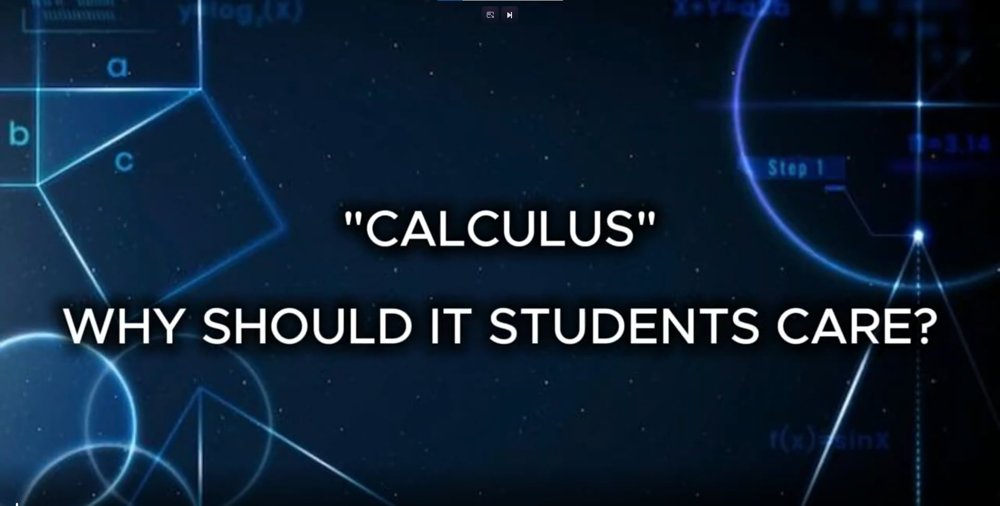

01
Infomercial
We created a video explaining why students should care about Calculus and how it can be useful in their studies and future careers.

Reflection
This activity helped us understand that Calculus is more than just solving equations. We learned how to explain its importance in a simple and engaging way.